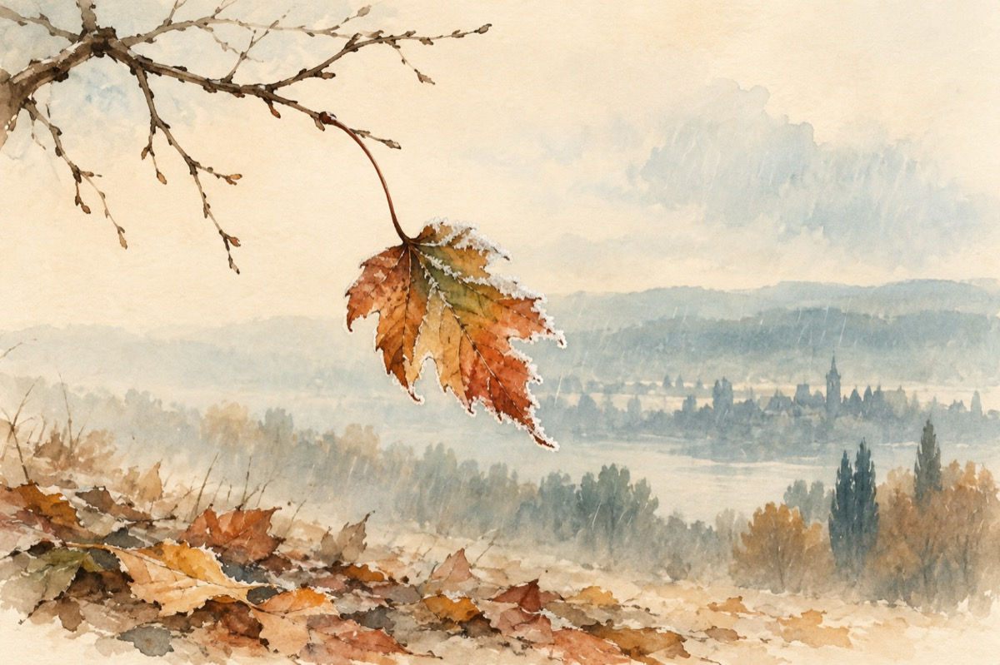

Toamna a venit
Da e toamnă, toamnă plină.
Nu tu, nu eu, suntem de vină.
Vina toamnei este una
,,Că nu știe să evite bruma!”
Frunza vine primăvara,
Vine și împodobește vara.
Urcă până sus la munte,
Și coboară pe răspântie!
Îmbracă natura toată
De la cap și pân’ la coadă.
Însoțește florile și roadele,
Ornează cărările.
Dar de la un timp încoace,
Nu știu Doamne ea ce face?
Își pătează buzele,
Părăsește crengile!...
Și așa, așa deodată,
Vine rodul, cu toamna bogată.
Merele-și arată fața,
Cum soarele dimineața!
Strugurii de sub perdea,
Își arată mândrii boaba.
Câmpul e cum o pictură,
Colorat din pensulă!
Și-uite-așa car după car,
Cară roadele-n hambar.
Și rămâne câmpul gol,
Ploile ne dau ocol!...
Și așa ca din senin
Vine bruma, vine lin,
Și lovește verdele,
Natura e-n pierdere!...
Totul cade la pământ.
Frunzele luate-n vânt,
Crengile rămân golașe,
Pământul dă să se-ngrașe!
Anul se așează-n ramă,
Din primăvară în toamnă.
Și totul se primenește,
Când iarna în prag sosește!...
Vasile Groza